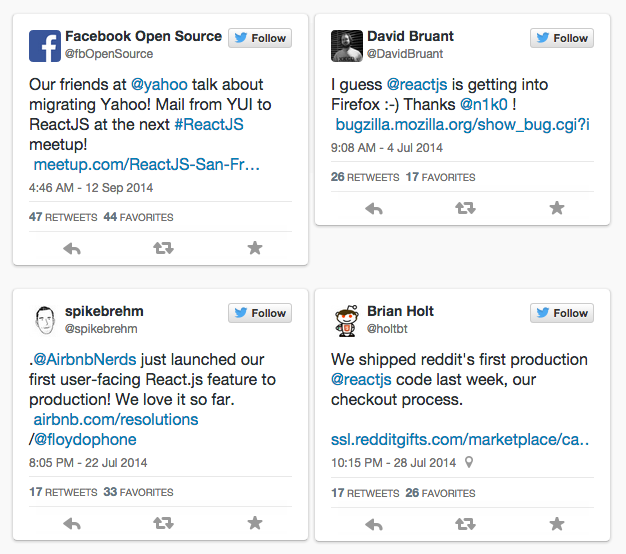

Introduction to React
A Javascript Library For Building User Interfaces
Oliver Zeigermann / @DJCordhose
Online version at: http://djcordhose.github.io/serious-javascript/slides/react-intro-nordic-coding-2014.html
Or: http://bit.ly/1ud7GxA
React
Why React?
We built React to solve one problem: building large applications with data that changes over time.
Simply express how your app should look at any given point in time, and React will automatically manage all UI updates
When the data changes, React conceptually hits the "refresh" button, and knows to only update the changed parts.
http://facebook.github.io/react/docs/why-react.htmlWho uses React?
http://facebook.github.io/react/blog/2014/09/12/community-round-up-22.html
Hello World
<!DOCTYPE html>
<html>
<head>
<script src="http://fb.me/react-0.12.0.js"></script>
<script src="http://fb.me/JSXTransformer-0.12.0.js"></script>
</head>
<body>
<div id="example"></div>
<script type="text/jsx">
/** @jsx React.DOM */
React.render(
<h1>Hello, world!</h1>,
document.getElementById('example')
);
</script>
</body>
</html>
Concepts
- The V in MVC (or whatever else)
- Code is organized in components
- Templates are also code
- Minimal API
- Reactive one-way data-binding: Changes to state will be rendered automatically
- Runs both on server and on client side
A Simple Component
/** @jsx React.DOM */
var mountNode = document.getElementById('example');
var HelloMessage = React.createClass({
render: function() {
return <div>Hello {this.props.name}</div>;
}
});
React.render(<HelloMessage name="Olli" />, mountNode);
React.createClass: creates a component classrender: creates a virtual DOM tree (maybe using JSX)this.props/ input: something passed into component instance as input
A Simple Component - Compiled
var mountNode = document.getElementById('example');
var HelloMessage = React.createClass({displayName: 'HelloMessage',
render: function() {
return React.createElement("div", null, "Hello ", this.props.name);
}
});
React.render(React.createElement(HelloMessage, {name: "Olli"}), mountNode);
React.render(ReactComponent component, DOMElement container): renders a component into a DOM elementReact.renderToString: for server side rendering- React: Top-Level API
Control Structures
- Philosophy of minimal API leads to no special concept for flow control
- Instead you just write JavaScript
- React's JSX compiler largely supports ES6 syntax
Rendering a list
var TodoList = React.createClass({
render: function() {
return <ul>{this.props.items.map((itemText) => <li>{itemText}</li>)}</ul>;
}
});
<TodoList items={['Stuff', 'More Stuff']} />
State and state changes
- component state can be read using
this.stateand set usingthis.setState() - when state changes
- render method of component will be called again
- diff for virtual DOM is calculated and applied
- other parts of the DOM remain unchanged
State and passing it
var TodoApp = React.createClass({
getInitialState: function() {
return {items: ['Do stuff', 'Do more stuff']};
},
render: function() {
return (
<div>
<h3>TODO</h3>
<TodoList items={this.state.items} />
</div>
);
}
});
React.render(<TodoApp />, mountNode);
Update to state
var TodoApp = React.createClass({
render: function() {
return (
<div>
<h3>TODO</h3>
<TodoList items={this.state.items} />
<form onSubmit={this.handleSubmit}>
<input onChange={this.onChange} value={this.state.text} />
<button>{'Add #' + (this.state.items.length + 1)}</button>
</form>
</div>
);
}
onChange: function(e) {
this.setState({text: e.target.value});
},
handleSubmit: function(e) {
e.preventDefault();
this.state.items.push(this.state.text);
this.setState({items: this.state.items, text: ''});
}
});
Minimal updates to the browsers DOM
Only the parts of the DOM that are actually changed are touched by React
Why is this good?
- changes to DOM are costly => react is fast
- updates to DOM can be batched => even faster
- best compatibility with other libraries working on the DOM (e.g. jQuery, D3)
Wrap-Up
- React is heavily used in Facebook and Instagram and many other companies
- Just the V in MVC
- Minimal API for simplicity
- Explicit code to avoid magic
- One-Way-Binding
- Browser DOM experiences minimal amount of updates
- Plays very well with other frameworks also working on the DOM
- Server side rendering for SEO or quick first page impression
- Probably the next hype
Links / Where to go from there
Thank you!
Questions / Discussion
Bonus Content
Why a web framework like this?
Aka: Why not just use jQuery?
Dynamic vs Stability

Copyright 2014, Oliver Zeigermann
Classic Web Application (Blue: Server, Purple: Browser)

Copyright 2014, Oliver Zeigermann
Classic Web Application: No need for abstraction from DOM or deeper knowledge of JavaScript
jQuery or no UI framework ok
SPA Lean: Rendering and UI in Browser

Copyright 2014, Oliver Zeigermann
SPA Lean: Abstraction from DOM beneficial
Use of a higher level framework like EmberJS, AngularJS or React
SPA Fat: Business Logic in Browser

Copyright 2014, Oliver Zeigermann
SPA Fat: Abstraction from DOM required, maintainability a demand
Modules, Classes and Types become more interesting
State Change and Rendering: An Experiment
- use todo list app
- create an element
- change color of element in browser dev tools
- add another item
- make sure changed color remains unchanged
- only parts updated in the count in the button and the newly created element